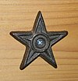

User talk:Wilfredor/Archive 1
 | This is an archive of past discussions. Do not edit the contents of this page. If you wish to start a new discussion or revive an old one, please do so on the current talk page. |
{kind=link}
{kind=link}
{kind=link}
![39 File:BORN TO RUN.jpg[edit]](#File:BORN_TO_RUN.jpg[edit]){kind=link}
{kind=link}
{kind=link}
{kind=link}
,_Zoo_de_Ciudad_Ho_Chi_Minh,_Vietnam,_2013-08-14,_DD_08.JPG){kind=link}
{kind=link}
{kind=link}
{kind=link}
Barnstar
Merci, je suis très sensible à ton message !--Jebulon (talk) 08:53, 5 November 2013 (UTC)
- Muchas gracias, estaba muy bueno acompañado con un café. ¡Bienvenido de vuelta! Poco2 19:47, 5 November 2013 (UTC)
Deletions
When i posted the artwork i created, i was not clear on the terms of use for such works. if they are considered out of scope, so be it. however, the logos i uploaded are NOT copyright violations, logos cannot be copyrighted. You have not taken any other editors to task for uploading their own work, or logos. therefore, you are targetting me for harassment. I would like you to not post any comments to my talk page, aside from (of course) notifications of deletion discussions, which you have every right to start. I vehemently reject your good will "kitten" as clearly done in bad faith. I am sorry i bothered to list that image for deletion, and i am sorry i tried to praise you for your good faith efforts at uploading your own work. I will not comment further on your talk page, or at any discussions you are involved with, as i am definitely biased now, and my input would not be helpful. I wish you the best of luck and success in all your future endeavors here. good bye.Mercurywoodrose (talk) 03:13, 11 November 2013 (UTC)
OOS
Hi The Photographer. Where do you find all this crap?! There are a ton of images with Biografia in the title. Is it a thing to upload a selfie+biography? --Dschwen (talk) 17:16, 13 November 2013 (UTC)
- There are infinites amount of pictures in facebook style. My search method is simple, I use key words in Spanish that usually facebook minded people are using. Example, "nacio", "soy el mejor", "mi amor"...etc. People love talking about themselves, knowing Spanish key words is endless the garbage amount that I find, I would take a thousand years to clear all. The few images that have use in some wikipage in Spanish, these pages are also promotional. --The Photographer (talk) 17:25, 13 November 2013 (UTC)
Shells Documenter
Hi The Photographer. Many thanks for handig over the "Shells Documenter". It is always a honour to get an award and a motivation for future work. --Llez (talk) 20:09, 14 November 2013 (UTC)
- It is an honor to have a friend like you --The Photographer (talk) 20:16, 14 November 2013 (UTC)
Hi, The Photographer. I restored File:I am blue.jpg. Please look at User talk:Taivo#File:I am blue.jpg. The uploader complained and named me vandal for deleting the file. I saw, that the file is unused, but I did not know, that you deleted the file from Polish wiki before presenting it for deletion. Please do not do that anymore. Instead, nominate for deletion only unused files. No file is out of scope or promotional or too bad quality, if it is used in an article. I'm afraid, that speedy deletion is not a proper way to delete unused / bad quality files, regular deletion request would be maybe better. Taivo (talk) 20:50, 14 November 2013 (UTC)
{kind=link}
{kind=link}
- Please, The Photographer, I said to you: do not nominate for speedy deletion images, what are used. This file File:Mi foto.jpg heavily used in multiple wikis. This should be handled through normal, not speedy deletion request. I hope, that there is no need to repeat that third time. Taivo (talk) 11:03, 15 November 2013 (UTC)
- Yes it is used in a big quantity of promotional pages and vandalism. But you are right. Hopefully clearing the bureaucratic process then. thanks --The Photographer (talk) 11:10, 15 November 2013 (UTC)
Keep calm, please
Don't be harry as newbe. Sometimes it a good idea to think for a while. Thank you for understanding. Electron ツ ➧☎ 16:08, 15 November 2013 (UTC)
The Photographer, keep calm. You can argue with your points; but no personal attacks, please. JKadavoor Jee 16:18, 15 November 2013 (UTC)
- Thank you both. My comment was not in bad shape, however, later to read it seems that if it is. --The Photographer (talk) 16:29, 15 November 2013 (UTC)
Quality Image Promotion
Your image has been reviewed and promoted
Congratulations! El Guamache Bay sunset.jpg, which was produced by you, was reviewed and has now been promoted to Quality Image status. If you would like to nominate another image, please do so at Quality images candidates. We also invite you to take part in the categorization of recently promoted quality images.
|
Your image has been reviewed and promoted
Congratulations! Periodic table large.svg, which was produced by you, was reviewed and has now been promoted to Quality Image status. If you would like to nominate another image, please do so at Quality images candidates. We also invite you to take part in the categorization of recently promoted quality images.
|
Your image has been reviewed and promoted
Congratulations! Fishermens in El Guamache Bay.jpg, which was produced by you, was reviewed and has now been promoted to Quality Image status. If you would like to nominate another image, please do so at Quality images candidates. We also invite you to take part in the categorization of recently promoted quality images.
|
Imágenes para borrado
Bueno por lo que mi respecta pueden hacer lo que quieran con las fotos ya me canse de los atropellos de acá, la quien borra bien ya no soy parte de Wikipedia ni de ninguno sus proyectos asociados, lo único que te agradecería es que indiques cuales le son para subirlas en otro sitio, lamentablemente acá tienen esa manía, de que no conozco de alguien o algo y no es importante entonces. --Veronidae (talk) 11:09, 18 November 2013 (UTC)
- ¿Cual Palantilla las únicas que están son estas y ninguna la colocaste tu?
Pero en no te fastidies ya me canse del necio criterio ese de relevancia, ya estoy bajando mis imágenes en otro sitio, las pueden borrar todas a mi no me van estar fastidiando la paciencia a mi no van faltar más el respeto. Chao que la pases bien. --Veronidae (talk) 14:57, 18 November 2013 (UTC)
{kind=link}
Consulta
Será que me puede explicar cual es la gracia de este tipo de imágenes sinceramente no les veo utilidad son fotos persona sin importancia enciclopedia y realmente me parecen fotos de tipo personal y que no deberían estar ocupando espacio en el proyecto como usted suele indicar de las fotos de otros usuarios, veo que usted suele cargar mucho este tipo de foto que no veo en que ayudan al proyecto, le recomendaría revisar primero su aportes antes de estar pidiendo que se borren los de los demás.
- File:Budapest city 0899.jpg
- File:Marriage in Saint Stephen's Basilica (Budapest) 2.jpg
- File:Marriage in Saint Stephen's Basilica (Budapest) 3.jpg
- File:Budapest city holl.jpg
- File:Program Evaluation & Design June 2013 Workshop 67.jpg
- File:Program Evaluation & Design June 2013 Workshop 349.jpg
- File:Budapest Hungary 06.jpg
- File:Program Evaluation & Design June 2013 Workshop 39.jpg
- File:Program Evaluation & Design June 2013 Workshop 38.jpg
- File:Program Evaluation & Design June 2013 Workshop 33.jpg
- File:Program Evaluation & Design June 2013 Workshop 31.jpg
- File:Program Evaluation & Design June 2013 Workshop 27.jpg
- File:Program Evaluation & Design June 2013 Workshop 26.jpg
- File:Program Evaluation & Design June 2013 Workshop 22.jpg
Atentamente. --Veronidae (talk) 16:55, 20 November 2013 (UTC)
Quality Image Promotion
Your image has been reviewed and promoted
Congratulations! Hong Kong in the night.jpg, which was produced by you, was reviewed and has now been promoted to Quality Image status. If you would like to nominate another image, please do so at Quality images candidates. We also invite you to take part in the categorization of recently promoted quality images.
|
How strange
There's a series of comments on your deletions on 19th November deletion requests [[1]] from User:Fæ who thinks your deletion reasons are insufficient. I disagree, but perhaps you need to me more technical in the deletion reasons? I've left a couple comments disagreeing with her, but I don't want to start any trouble. Ellin Beltz (talk) 19:55, 21 November 2013 (UTC)
Quality Image Promotion
 |
Your image has been reviewed and promoted
Congratulations! Plaza de Toros de Maracaibo-1-9.jpg, which was produced by you, was reviewed and has now been promoted to Quality Image status. If you would like to nominate another image, please do so at Quality images candidates. We also invite you to take part in the categorization of recently promoted quality images.
|
 |
Your image has been reviewed and promoted
Congratulations! El Guamache Bay, Margarita island.jpg, which was produced by you, was reviewed and has now been promoted to Quality Image status. If you would like to nominate another image, please do so at Quality images candidates. We also invite you to take part in the categorization of recently promoted quality images.
|
Bonjour ! Tu as créé les pages concernant les monuments nationaux vénézuéliens. J'ai commencé à créer certains articles sur la Wikipédia francophone mais je n'ai trouvé aucune source officielle vénézuélienne et quelqu'un vient de demander une source sur Grand Hôtel Amazonas. Comment as-tu trouvé cette liste par État et quelle est ta source ? Tu peux répondre directement sur ma page de discussion sur la Wikipédia francophone ICI. Nonopoly (talk) 12:21, 24 November 2013 (UTC)
- Malheureusement, je n'ai pas de compte google. Aurais-tu la liste sous forme de pdf ou une source officielle ? Nonopoly (talk) 08:28, 25 November 2013 (UTC)
Quality Image Promotion
Your image has been reviewed and promoted
Congratulations! Plaza de Toros de Maracaibo Monumental 3.jpg, which was produced by you, was reviewed and has now been promoted to Quality Image status. If you would like to nominate another image, please do so at Quality images candidates. We also invite you to take part in the categorization of recently promoted quality images.
|
 |
Your image has been reviewed and promoted
Congratulations! Plaza de Toros de Maracaibo 02.jpg, which was produced by you, was reviewed and has now been promoted to Quality Image status. If you would like to nominate another image, please do so at Quality images candidates. We also invite you to take part in the categorization of recently promoted quality images.
|
Quality Image Promotion
 |
Your image has been reviewed and promoted
Congratulations! Plaza de Toros de Maracaibo pano-1-7.jpg, which was produced by you, was reviewed and has now been promoted to Quality Image status. If you would like to nominate another image, please do so at Quality images candidates. We also invite you to take part in the categorization of recently promoted quality images.
|
Self promotion, low quality image, non encyclopedic value. Commons is not facebook
I appreciate your work in helping delete images that are out of scope. Several Admins are giving you a hard time for this:
- "Self promotion, low quality image, non encyclopedic value. Commons is not facebook"
While I think it's OK, you might change it to:
- Self promotion, low quality image with little or no educational value. Commons is not Flickr.
That links each point to the relevant policy. . Jim . . . . (Jameslwoodward) (talk to me) 14:01, 26 November 2013 (UTC)
- Thanks --The Photographer (talk) 14:03, 26 November 2013 (UTC)
Your photos of Budapest
Hi Wilfredo. We in Hungarian Wikipedia are working on your nice photos you took this summer in Budapest. We tried to find the actual places where you took them. We managed to locate most of them, however, we do not find the place where File:Budapest city 07.jpg was shot. I know where exactly you were 42 minutes before and eight minutes after this photo had been shot (you see, the NSA knows almost everything), but I do not know the route you took. Do you still remember? Cheers Csigabi (talk) 14:09, 26 November 2013 (UTC)
- Hi Csigabi. I added a aproximate location based on this picture. Statue base is that water source. :) --The Photographer (talk) 14:26, 26 November 2013 (UTC)
Thanks. In the meantime another editor found it. Csigabi (talk) 17:04, 26 November 2013 (UTC)
- Nice!, you are welcome --The Photographer (talk) 17:06, 26 November 2013 (UTC)
Hi, Wilfredo. I have another question. Am I correct to assume that File:Budapest Hungary 02.jpg and File:Budapest Hungary 04.jpg were taken in St. Steven's Basilica? They were shot respectively 8 minutes before and 2 minutes after File:Budapest Hungary 03.jpg which is definitely in St. Steven's. However their style is different from the richly ornamented interior of the cathedral, which makes me a little uncertain. Csigabi (talk) 11:18, 28 November 2013 (UTC)
 Done Of course yes, I already add category to images. Thanks --The Photographer (talk) 12:11, 28 November 2013 (UTC)
Done Of course yes, I already add category to images. Thanks --The Photographer (talk) 12:11, 28 November 2013 (UTC)
Quality Image Promotion
Your image has been reviewed and promoted
Congratulations! Cairina moschata momelanotus head.jpg, which was produced by you, was reviewed and has now been promoted to Quality Image status. If you would like to nominate another image, please do so at Quality images candidates. We also invite you to take part in the categorization of recently promoted quality images.
|
Changement de catégories non consensuelle
Bonjour. Vous avez modifié les catégories des municipalités de l'Etat de Nueva Esparta (donc, catégorisés selon le nom de l'Etat) au profit d'une notion géographique, l'île Margarita, alors que toutes les autres municipalités du Venezuela sont catégorisées selon le nom de l'Etat. Pourquoi une telle modification qui n'a aucune justification ? Pourriez-vous révoquer votre modification ?? Nonopoly (talk) 15:23, 27 November 2013 (UTC)
- Île de Margarita fait partie des 90% du territoire occupé par Nueva Esparta. C'est la raison principale. C'est un problème que j'ai eu dans Wikipedia. Rédiger différents articles de deux territoires identiques --The Photographer (talk) 15:34, 27 November 2013 (UTC)
- Oui, mais toutes les photos sont classés en fonction de l'Etat, pas d'une île ou autre. Nonopoly (talk) 15:38, 27 November 2013 (UTC)
- Vous pouvez laisser la catégorie précédente et ajouter la nouvelle "Nueva Esparta". L'idée est de tenir compte des municipalités dans la catégorie "Isla Margarita" --The Photographer (talk) 15:49, 27 November 2013 (UTC)
- Très bien, j'ai compris ce que vous vouliez faire. Je vais le faire. Nonopoly (talk) 15:52, 27 November 2013 (UTC)
- merci beaucoup :D --The Photographer (talk) 15:57, 27 November 2013 (UTC)
- Très bien, j'ai compris ce que vous vouliez faire. Je vais le faire. Nonopoly (talk) 15:52, 27 November 2013 (UTC)
- Vous pouvez laisser la catégorie précédente et ajouter la nouvelle "Nueva Esparta". L'idée est de tenir compte des municipalités dans la catégorie "Isla Margarita" --The Photographer (talk) 15:49, 27 November 2013 (UTC)
- Oui, mais toutes les photos sont classés en fonction de l'Etat, pas d'une île ou autre. Nonopoly (talk) 15:38, 27 November 2013 (UTC)
- Île de Margarita fait partie des 90% du territoire occupé par Nueva Esparta. C'est la raison principale. C'est un problème que j'ai eu dans Wikipedia. Rédiger différents articles de deux territoires identiques --The Photographer (talk) 15:34, 27 November 2013 (UTC)
{kind=link}

|
File:African women icon.svg has been listed at Commons:Deletion requests so that the community can discuss whether it should be kept or not. We would appreciate it if you could go to voice your opinion about this at its entry.
If you created this file, please note that the fact that it has been proposed for deletion does not necessarily mean that we do not value your kind contribution. It simply means that one person believes that there is some specific problem with it, such as a copyright issue. Please see Commons:But it's my own work! for a guide on how to address these issues. |
Mercurywoodrose (talk) 00:08, 29 November 2013 (UTC)
{kind=link}
- I have withdrawn this nomination, based on the undeletion discussion that was closed as undelete. my apologies.Mercurywoodrose (talk) 00:16, 29 November 2013 (UTC)
- Np, thanks --The Photographer (talk) 00:48, 29 November 2013 (UTC)
Quality Image Promotion
Your image has been reviewed and promoted
Congratulations! People working in Hong Kong.jpg, which was produced by you, was reviewed and has now been promoted to Quality Image status. If you would like to nominate another image, please do so at Quality images candidates. We also invite you to take part in the categorization of recently promoted quality images.
|
FP Promotion
| ★ This image has been promoted to Featured picture! ★
The image File:Casa Colonial del Centro Historico de Maracaibo.jpg, that you nominated on Commons:Featured picture candidates/File:Casa Colonial del Centro Historico de Maracaibo.jpg has been promoted. Thank you for your contribution. If you would like to nominate another image, please do so. |
/FPCBot (talk) 06:01, 29 November 2013 (UTC)
Valued Image Promotion
Congratulations! The image you nominated was reviewed and has now been promoted as a valued image. It is considered to be the most valued image on Commons within the scope:
Muscovy duck heads.
If you would like to nominate another image, please do so at Valued images candidates.
Congratulations! The image you nominated was reviewed and has now been promoted as a valued image. It is considered to be the most valued image on Commons within the scope:
Donax striatus.
If you would like to nominate another image, please do so at Valued images candidates.
Quality Image Promotion
Your image has been reviewed and promoted
Congratulations! Hong Kong Sunset Black and White.jpg, which was produced by you, was reviewed and has now been promoted to Quality Image status. If you would like to nominate another image, please do so at Quality images candidates. We also invite you to take part in the categorization of recently promoted quality images.
|
Quality Image Promotion
Your image has been reviewed and promoted
Congratulations! Pyrgus em Isla Margarita.jpg, which was produced by you, was reviewed and has now been promoted to Quality Image status. If you would like to nominate another image, please do so at Quality images candidates. We also invite you to take part in the categorization of recently promoted quality images.
|
AN discussion
Hi, I mentioned you at Commons:Administrators'_noticeboard#Automated_deletion_requests. Thanks --Fæ (talk) 10:59, 3 December 2013 (UTC)
Quality Image Promotion
 |
Your image has been reviewed and promoted
Congratulations! International Commerce Centre on Victoria Harbour.jpg, which was produced by you, was reviewed and has now been promoted to Quality Image status. If you would like to nominate another image, please do so at Quality images candidates. We also invite you to take part in the categorization of recently promoted quality images.
|
Please stop with the kittens
I appreciate your eye for feline adorableness but please stop decorating RfDs with off-topic images. Or any images, actually. I know filing tons of RfDs for the exact same reason for the exact same kind of off-scope files can be tiresome, but let's keep the RfD list clean and standard ok? --Pitke (talk) 12:16, 5 December 2013 (UTC)
- On the other hand... wait, no, now I understand. I was a bit hasty to criticize the kittens. You're on to something with softening the deletion request message for the eyes of what most of the time are first-time contributers... and I'm thinking maybe it's time to create a standard-issue template for what you've been doing. Actually, an alternative RfD template altogether, just for this specific type of issue. --Pitke (talk) 12:34, 5 December 2013 (UTC)
|
|
File:African women icon.svg has been listed at Commons:Deletion requests so that the community can discuss whether it should be kept or not. We would appreciate it if you could go to voice your opinion about this at its entry.
If you created this file, please note that the fact that it has been proposed for deletion does not necessarily mean that we do not value your kind contribution. It simply means that one person believes that there is some specific problem with it, such as a copyright issue. Please see Commons:But it's my own work! for a guide on how to address these issues. |
-- Tuválkin ✉ 09:35, 6 December 2013 (UTC)
FP Promotion
| ★ This image has been promoted to Featured picture! ★
The image File:Bufo marinus in Venezuela.jpg, that you nominated on Commons:Featured picture candidates/File:Bufo marinus in Venezuela.jpg has been promoted. Thank you for your contribution. If you would like to nominate another image, please do so. |
/FPCBot (talk) 14:02, 9 December 2013 (UTC)
Quality Image Promotion
 |
Your image has been reviewed and promoted
Congratulations! Maracaibo Lake view in night from Lago Mall, Venezia Restaurant.jpg, which was produced by you, was reviewed and has now been promoted to Quality Image status. If you would like to nominate another image, please do so at Quality images candidates. We also invite you to take part in the categorization of recently promoted quality images.
|
Your image has been reviewed and promoted
Congratulations! Circus Motion blur.jpg, which was produced by you, was reviewed and has now been promoted to Quality Image status. If you would like to nominate another image, please do so at Quality images candidates. We also invite you to take part in the categorization of recently promoted quality images.
|
Quality Image Promotion
Your image has been reviewed and promoted
Congratulations! Plaza el Angel.jpg, which was produced by you, was reviewed and has now been promoted to Quality Image status. If you would like to nominate another image, please do so at Quality images candidates. We also invite you to take part in the categorization of recently promoted quality images.
|
Awesome images
Thank you for the star and your sympathy, The Photographer! I am half-retired and that was most unexpected. -- Alvesgaspar (talk) 08:51, 11 December 2013 (UTC)
Don Quijote
¡Gracias! Ya te ayudo a rellenar la info. Besos, salieron estupendas :) Laura Fiorucci (talk) 20:05, 12 December 2013 (UTC)
Quality Image Promotion
 |
Your image has been reviewed and promoted
Congratulations! Plaza el Angel. Alumbrado virgen de la Chiquinquirá.jpg, which was produced by you, was reviewed and has now been promoted to Quality Image status. If you would like to nominate another image, please do so at Quality images candidates. We also invite you to take part in the categorization of recently promoted quality images.
|
Quality Image Promotion
 |
Your image has been reviewed and promoted
Congratulations! Don Quijote de la Mancha. Teatro Teresa Carreño.jpg, which was produced by you, was reviewed and has now been promoted to Quality Image status. If you would like to nominate another image, please do so at Quality images candidates. We also invite you to take part in the categorization of recently promoted quality images.
|
Quality Image Promotion
 |
Your image has been reviewed and promoted
Congratulations! Don Quijote de la Mancha. Teatro Teresa Carreño 2.jpg, which was produced by you, was reviewed and has now been promoted to Quality Image status. If you would like to nominate another image, please do so at Quality images candidates. We also invite you to take part in the categorization of recently promoted quality images.
|
 |
Your image has been reviewed and promoted
Congratulations! Don Quijote de la Mancha. Teatro Teresa Carreño 3.jpg, which was produced by you, was reviewed and has now been promoted to Quality Image status. If you would like to nominate another image, please do so at Quality images candidates. We also invite you to take part in the categorization of recently promoted quality images.
|
File:BORN TO RUN.jpg[edit]
File:BORN TO RUN.jpg.... an historical t shirt.
Gordo (talk) 22:43, 20 December 2013 (UTC)
{kind=link}
2014 !
| * * * 2014! * * * | |
| Merry Christmas! Happy New Year! Happy holidays! -- George Chernilevsky talk 21:06, 22 December 2013 (UTC) |
Happy Holidays
| Happy Holidays! | |
| G'day, just a quick greeting wishing you and your family happy holidays and all the best for 2014. And of course, a big thank you for putting a leg up by doing what you do on Commons, and helping to make it the fantastic project that it is. Greetings from a warm west coast of Aussie. russavia (talk) 02:01, 24 December 2013 (UTC) |
Merry Christmas and Happy New year
I wish you and your family a very happy Christmas and a wonderful new year. --Joydeep Talk 11:10, 24 December 2013 (UTC)
Feliz Navidad
A kitten for you!
Joyeux Noël ! Et merci pour ton travail sur Commons.
Yann (talk) 15:30, 25 December 2013 (UTC)
Joyeux Noël ! Joyeuses fêtes de fin d'année !
Hi The Photographer,
Merci beaucoup pour ton message. Es-tu sur la photo ? Où ? Que signifient les lettres sur le drapeau ?
A mon tour de te souhaiter de Joyeuses Fêtes au Vénézuéla, avec des vœux chaleureux de réussite, de santé et de succès pour toi, ta famille, tes amis et ton pays.
But beware of "google translations": "un abrazo" is typical for spanish language, but is not in use in french. If you translate it by "un câlin", it may have a strange significance... "un câlin" is used for a little child with her mother, or,... in a different context... something more... between adults..., if you see what I mean...
So, it was funny for me to read this from you !
But I like this "abrazo", even if we don't have in French any word like this one. I understand it very well, and I'm happy to receive this "abrazo" from you.
I wish you many happy time in "Commons" (Fortunately you are back !), and I hope we should have an occasion to meet in real, who knows ?
Un abrazo, my friend from overseas !--Jebulon (talk) 09:45, 27 December 2013 (UTC)
- Un de ces jours nous devrions résoudre à pratiquer mon français parlé. Merci --The Photographer (talk) 18:43, 27 December 2013 (UTC)
Quality Image Promotion
Your image has been reviewed and promoted
Congratulations! Child working in Maracaibo.jpg, which was produced by you, was reviewed and has now been promoted to Quality Image status. If you would like to nominate another image, please do so at Quality images candidates. We also invite you to take part in the categorization of recently promoted quality images.
|
 |
Your image has been reviewed and promoted
Congratulations! Typical humble home around specialty pediatric hospital in Maracaibo 2.jpg, which was produced by you, was reviewed and has now been promoted to Quality Image status. If you would like to nominate another image, please do so at Quality images candidates. We also invite you to take part in the categorization of recently promoted quality images.
|
Your image has been reviewed and promoted
Congratulations! Hong Kong skyscrapers in a night of typhoon.jpg, which was produced by you, was reviewed and has now been promoted to Quality Image status. If you would like to nominate another image, please do so at Quality images candidates. We also invite you to take part in the categorization of recently promoted quality images.
|
Quality Image Promotion
Your image has been reviewed and promoted
Congratulations! Boca de rio adorno para muertos.jpg, which was produced by you, was reviewed and has now been promoted to Quality Image status. If you would like to nominate another image, please do so at Quality images candidates. We also invite you to take part in the categorization of recently promoted quality images.
|
DR kittens?
I don't mind closing your DRs, but can you please stop adding the kitten image to all of them? INeverCry 19:36, 27 December 2013 (UTC)
- I already stoped, You can see my new template in my userpage. Thanks --The Photographer (talk) 19:43, 27 December 2013 (UTC)
2014 !
Hi The Photographer ! I wish you and your family a very happy new year ! --JLPC (talk) 11:52, 1 January 2014 (UTC)
From me as well: All the best for 2014! --XRay talk 05:50, 2 January 2014 (UTC)
Feliz Año
Hola The Photographer, gracias por tus deseos que hago extensivos a ti y a los tuyos. También yo nos deseo más fotos fantásticas y que sigamos todos aprendiendo por aquí. Cualquier cosa ya sabes dónde estoy, un abrazo, Poco2 06:56, 2 January 2014 (UTC)
Felice Anno Nuovo
Caro Wilfredo, ti auguro un felice anno nuovo 2014 con tanta salute...e belle immagini.--Wolfgang Moroder (talk) 07:07, 2 January 2014 (UTC)
Hola Wilfredo, espero que hayas comenzado bien el año. He visto tus notas en esta imagen pero no he entendido tus expectativas. Las verticales de la imagen son verticales, y las horizontales solo deben serlo cuando me encuentro en un plano paralelo a un cuerpo. Vamos, que un edificio sólo va a tener un tejado horizontal si el sensor de la cámara está paralelo al plano de la fachada del edificio, en todos los demás casos hay un punto de fuga. No sé si me explico, pero en cualquier caso esos problemas de perspectiva que apuntas, en mi opinión, no lo son. Un saludo, Poco2 15:48, 2 January 2014 (UTC)
{kind=link}
- Saludos Diego. La imagen pareciera estar estirada hacia la parte superior derecha. El techo y las ventanas parecieran estar empujandose en esa dirección. Es mi punto de vista, no luce del todo natural, quizás habría que ver la costrucción completa. Realizaste la corrección de lente de Lightroom sin ninguna otra corrección de perspectiva?. --The Photographer (talk) 15:58, 2 January 2014 (UTC)
- Mi apreciación es diferente, no veo deformación por ningún sitio. Sí, aplico siempre la corrección de LR por defecto del objetivo y luego casi siempre una manual (como en este caso). Saludos, Poco2 22:06, 2 January 2014 (UTC)
- Gracias por escribirme de nuevo Diego. Yo creo que quizas sería bueno preguntar a alguien profesional experto en el tema. Y no es que desconfíe de tu experiencia. Yo puedo estar equivocado, sin embargo, sería bueno preguntar a otros usuarios para observar su opinión. Un abrazo. --The Photographer (talk) 13:04, 3 January 2014 (UTC)
- Saludos Diego. La imagen pareciera estar estirada hacia la parte superior derecha. El techo y las ventanas parecieran estar empujandose en esa dirección. Es mi punto de vista, no luce del todo natural, quizás habría que ver la costrucción completa. Realizaste la corrección de lente de Lightroom sin ninguna otra corrección de perspectiva?. --The Photographer (talk) 15:58, 2 January 2014 (UTC)
Gracias amor
Gracias por mover o file mi vida, vi a mensagem depois de ver a tua movimentação :* Béria L. Rodríguez msg 18:25, 2 January 2014 (UTC)
- Ok linda, hoy me gustaría comer frango con arroz linda. Dejé poco dinero encima de la jeladeira por si lo necesitas para comprar algo que haga falta. Nos vemos en la tarde. --The Photographer (talk) 19:41, 2 January 2014 (UTC)
Quality Image Promotion
Your image has been reviewed and promoted
Congratulations! Barrio de Caracas.jpg, which was produced by you, was reviewed and has now been promoted to Quality Image status. If you would like to nominate another image, please do so at Quality images candidates. We also invite you to take part in the categorization of recently promoted quality images.
|
 |
Your image has been reviewed and promoted
Congratulations! Anser cygnoides head.jpg, which was produced by you, was reviewed and has now been promoted to Quality Image status. If you would like to nominate another image, please do so at Quality images candidates. We also invite you to take part in the categorization of recently promoted quality images.
|
Quality Image Promotion
Your image has been reviewed and promoted
Congratulations! Caracas-Guarenas train underconstruction.jpg, which was produced by you, was reviewed and has now been promoted to Quality Image status. If you would like to nominate another image, please do so at Quality images candidates. We also invite you to take part in the categorization of recently promoted quality images.
|
Quality Image Promotion
Your image has been reviewed and promoted
Congratulations! Hibiscus red.jpg, which was produced by you, was reviewed and has now been promoted to Quality Image status. If you would like to nominate another image, please do so at Quality images candidates. We also invite you to take part in the categorization of recently promoted quality images.
|
Quality Image Promotion
 |
Your image has been reviewed and promoted
Congratulations! Slums in Caracas, Venezuela.jpg, which was produced by you, was reviewed and has now been promoted to Quality Image status. If you would like to nominate another image, please do so at Quality images candidates. We also invite you to take part in the categorization of recently promoted quality images.
|
Chevrolet
I hope you manage to fix the image. The quality and level of detail of the car were high and impressive. Nice idea. Regards --ArildV (talk) 16:02, 7 January 2014 (UTC)
- Thanks. I will try :) --The Photographer (talk) 17:30, 7 January 2014 (UTC)
{kind=link}
Thank you for the QI review. I am not sure I understand your concern about the photo, as there are no notes on the image. Also, my skill at cleaning up photos is non existent. Would you possibly be able to touch it up? --Admrboltz (talk) 02:21, 3 January 2014 (UTC)
{kind=link}
- Thanks for write me. Sure!, send me your mail. I will send you a version and if you agreement then you can upload it. --The Photographer (talk) 13:01, 3 January 2014 (UTC)
- Did you see the additional comment re: the Gamma levels? --Admrboltz (talk) 23:36, 7 January 2014 (UTC)
- Thanks for write me. Sure!, send me your mail. I will send you a version and if you agreement then you can upload it. --The Photographer (talk) 13:01, 3 January 2014 (UTC)
{kind=link}
Hi The Photographer- I know you are not a fan of the composition of this image, but I have added an alternate version with (I hope) an improved and more natural sky. Thanks-Godot13 (talk) 22:14, 7 January 2014 (UTC)
FP promotion
|
★ This image has been promoted to Featured picture! ★
The image File:Domesticated goose head, Chaguaramal, Venezuela.jpg, that you nominated on Commons:Featured picture candidates/File:Domesticated goose head, Chaguaramal, Venezuela.jpg has been promoted. Thank you for your contribution. If you would like to nominate another image, please do so. |
/Thanks, Jee 06:12, 8 January 2014 (UTC)
Quality Image Promotion
Your image has been reviewed and promoted
Congratulations! Slums in Caracas.jpg, which was produced by you, was reviewed and has now been promoted to Quality Image status. If you would like to nominate another image, please do so at Quality images candidates. We also invite you to take part in the categorization of recently promoted quality images.
|
Your image has been reviewed and promoted
Congratulations! Selva del Estado Anzoategui en Chaguaramal.jpg, which was produced by you, was reviewed and has now been promoted to Quality Image status. If you would like to nominate another image, please do so at Quality images candidates. We also invite you to take part in the categorization of recently promoted quality images.
|
Your image has been reviewed and promoted
Congratulations! Atardecer en Selva del Estado Anzoategui en Chaguaramal.jpg, which was produced by you, was reviewed and has now been promoted to Quality Image status. If you would like to nominate another image, please do so at Quality images candidates. We also invite you to take part in the categorization of recently promoted quality images.
|
Quality Image Promotion
Your image has been reviewed and promoted
Congratulations! Billbergia pyramidalis flower.jpg, which was produced by you, was reviewed and has now been promoted to Quality Image status. If you would like to nominate another image, please do so at Quality images candidates. We also invite you to take part in the categorization of recently promoted quality images.
|
FP Promotion
| ★ This image has been promoted to Featured picture! ★
The image File:Hong Kong skyscrapers in a night of typhoon.jpg, that you nominated on Commons:Featured picture candidates/File:Hong Kong skyscrapers in a night of typhoon.jpg has been promoted. Thank you for your contribution. If you would like to nominate another image, please do so. |
/FPCBot (talk) 06:01, 11 January 2014 (UTC)
Quality Image Promotion
Your image has been reviewed and promoted
Congratulations! Anser anser domesticus 2.jpg, which was produced by you, was reviewed and has now been promoted to Quality Image status. If you would like to nominate another image, please do so at Quality images candidates. We also invite you to take part in the categorization of recently promoted quality images.
|
Problème en VI
There is a problem with File:Agraulis vanillae at Isla Margarita.jpg if you want to vote, it opens the old appointment. I have no idea. Maybe you could ask user:myrabella. Je soutiens toujours cette image! --Archaeodontosaurus (talk) 06:29, 13 January 2014 (UTC)
- Merci, Je vais lui demander --The Photographer (talk) 13:20, 13 January 2014 (UTC)
Quality Image Promotion
Your image has been reviewed and promoted
Congratulations! Edificios de Maiquetia.jpg, which was produced by you, was reviewed and has now been promoted to Quality Image status. If you would like to nominate another image, please do so at Quality images candidates. We also invite you to take part in the categorization of recently promoted quality images.
|
Your image has been reviewed and promoted
Congratulations! Cow dung 34.jpg, which was produced by you, was reviewed and has now been promoted to Quality Image status. If you would like to nominate another image, please do so at Quality images candidates. We also invite you to take part in the categorization of recently promoted quality images.
|
Quality Image Promotion
 |
Your image has been reviewed and promoted
Congratulations! Ballet Don Quijote en Teatro Teresa Carreño 003.jpg, which was produced by you, was reviewed and has now been promoted to Quality Image status. If you would like to nominate another image, please do so at Quality images candidates. We also invite you to take part in the categorization of recently promoted quality images.
|
Valued Image Promotion
Congratulations! The image you nominated was reviewed and has now been promoted as a valued image. It is considered to be the most valued image on Commons within the scope:
Anser anser domesticus (Domestic goose), head.
If you would like to nominate another image, please do so at Valued images candidates.
A barnstar for you!
|  | The Real Life Barnstar |
| Fue un placer :) Gracias Rafagon726 (talk) 20:56, 14 January 2014 (UTC) |
Valued Image Promotion
Congratulations! The image you nominated was reviewed and has now been promoted as a valued image. It is considered to be the most valued image on Commons within the scope:
Agraulis vanillae (Underside) living.
If you would like to nominate another image, please do so at Valued images candidates.
Quality Image Promotion
Your image has been reviewed and promoted
Congratulations! Goat killed at Christmas Lunch 2.jpg, which was produced by you, was reviewed and has now been promoted to Quality Image status. If you would like to nominate another image, please do so at Quality images candidates. We also invite you to take part in the categorization of recently promoted quality images.
|
Your image has been reviewed and promoted
Congratulations! Goat blood for Christmas Lunch.jpg, which was produced by you, was reviewed and has now been promoted to Quality Image status. If you would like to nominate another image, please do so at Quality images candidates. We also invite you to take part in the categorization of recently promoted quality images.
|
Your image has been reviewed and promoted
Congratulations! Cola de Raton.jpg, which was produced by you, was reviewed and has now been promoted to Quality Image status. If you would like to nominate another image, please do so at Quality images candidates. We also invite you to take part in the categorization of recently promoted quality images.
|
FYI
| ★ This image has been promoted to Featured picture! ★
The image File:Vistadarodoviaimigrantes2.JPG, that you nominated on Commons:Featured picture candidates/File:Vistadarodoviaimigrantes2.JPG has been promoted. Thank you for your contribution. If you would like to nominate another image, please do so. |
{kind=link}
{kind=link}
--AdmrBoltz 22:06, 20 January 2014 (UTC)
What's going on here? Why the fake? -- Colin (talk) 12:05, 21 January 2014 (UTC) Thank Colin. I forget upload the right version. It was a joke to my friends in RL. :S --The Photographer (talk) 12:28, 21 January 2014 (UTC)
{kind=link}
Thanks for Description of my File
Thanks for your thanks for updating my description on File:Las Vegas (Nevada, USA), The Strip -- 2012 -- 19.jpg. :-) You're right, sometimes the descriptions are too short and there too many english words in an german description. I'll do my very best.--XRay talk 17:12, 22 January 2014 (UTC)
- You are Welcome --The Photographer (talk) 17:14, 22 January 2014 (UTC)
Quality Image Promotion
 |
Your image has been reviewed and promoted
Congratulations! General Rafael Urdaneta Bridge.jpg, which was produced by you, was reviewed and has now been promoted to Quality Image status. If you would like to nominate another image, please do so at Quality images candidates. We also invite you to take part in the categorization of recently promoted quality images.
|
Your image has been reviewed and promoted
Congratulations! Christmas Goat 5.jpg, which was produced by you, was reviewed and has now been promoted to Quality Image status. If you would like to nominate another image, please do so at Quality images candidates. We also invite you to take part in the categorization of recently promoted quality images.
|
Valued Image Promotion
Congratulations! The image you nominated was reviewed and has now been promoted as a valued image. It is considered to be the most valued image on Commons within the scope:
Coats of arms of Nueva Esparta state.
If you would like to nominate another image, please do so at Valued images candidates.
Conviasa photo in Venezuelan newspaper
Heya mate, hoping you can help me here. A Venezuelan newspaper, El Carabobeño, has published a photo of a buddy of mine of a Conviasa aircraft (File:Conviasa Airbus A340-211 Ramirez-1.jpg in fact). A screenshot of it can be seen here. It has the date 25 January on it. They did not ask him to publish the photo, nor have they conformed with the GFDL 1.2 licence (in case they got it from Commons), and we are trying to find out if El Carabobeño has actually published the photo in their printed newspaper. Is there any possibility that you might be able to help me to help him to find this info out. Appreciate your help with this. Cheers, russavia (talk) 04:13, 26 January 2014 (UTC)
{kind=link}
- Hi Russ, today I checked the prited version and the picture is there. I am sorry but in Venezuela laws are not respected. Many newspapers have published pictures of mine without credit standing "Photo File" or a name of another photographer. There are additional reasons concerning the system of government can not comment here --The Photographer (talk) 13:14, 26 January 2014 (UTC)
Hola Wilfredo, siento haber malinterpretado tu comentario. Yo soy muy purista y no se me ocurriría hacer experimentos como "transplantar" un ojo. Fíjate que estoy comenzando con HDR y estoy haciendo más panoramas. Si bien, mi objetivo siguiendo siendo conseguir una buena imagen sin editarla demasiado o sin tener que superponer varias para conseguir un mejor resultado. En el comentario en FPC comentas que observas algunos problemas de sobrenitidez o eliminación de ruido en algunas de mis fotografías, pero, si se trata de un problema que observas de vez en cuando, no acabo de entender cuál es el problema en concreto. ¿Me lo puedes explicar de nuevo?. Visto que te has molestado en comentarlo quisiera estar seguro de haberlo entendido, para poder tenerlo en cuenta. Un abrazo, Poco2 12:53, 26 January 2014 (UTC)
- Tranquilo Diego, gracias por comprender. Casi ningun usuario hace lo que hiciste, asi que valoro mucho tu disculpa. Volviendo al tema de la imagen, es un ruido regular en toda la foto. En algunas de tus fotos lo haces tan fuerte que pareciera que fuera una pintura de acuarela en ciertas zonas. Existen varios filtros de nitidez que no crean este efecto. Con lightroom se podria jugar con reduccion de ruido por color y solo agregar nitidez en casos necesarios y en una cantidad minima. --The Photographer (talk) 13:38, 26 January 2014 (UTC)
- Ok, gracias por aclaralo y por la imagen que has subido. Hasta hace un año y medio aplicaba siempre una máscara de eliminación de ruido, algo que era exagerado. Ahora no lo hago nunca. En este caso concreto creo que, más que un problema de eliminación de ruido, es un problema de sobrenitidez. A propósito, acabo de subir una versión, en la que creo que la pupila tiene mejor pinta. A todo esto, lo que más me fascina de la foto es que casi me veo reflejado en el ojo de una pitón de 3 metros :) Poco2 14:08, 26 January 2014 (UTC)
- Excelente, te ha quedado genial, excelente enfoque y si, te logras ver en el reflejo. Muy arrecha la foto The Photographer (talk) 15:04, 26 January 2014 (UTC)
- Tranquilo Diego, gracias por comprender. Casi ningun usuario hace lo que hiciste, asi que valoro mucho tu disculpa. Volviendo al tema de la imagen, es un ruido regular en toda la foto. En algunas de tus fotos lo haces tan fuerte que pareciera que fuera una pintura de acuarela en ciertas zonas. Existen varios filtros de nitidez que no crean este efecto. Con lightroom se podria jugar con reduccion de ruido por color y solo agregar nitidez en casos necesarios y en una cantidad minima. --The Photographer (talk) 13:38, 26 January 2014 (UTC)
Nuevas subidas
Epale señor, acabo de subir 6 fotos. Dime si te gustaron. SaludosMokoFix - (BlackBeast) (talk) 19:55, 25 January 2014 (UTC)
- Puedes colocarla donde creas que deba estar. Me avisas donde para luego buscarlas. Un abrazoMokoFix - (BlackBeast) (talk) 16:58, 27 January 2014 (UTC)
Quality Image Promotion
Your image has been reviewed and promoted
Congratulations! Anthurium crassinervium.jpg, which was produced by you, was reviewed and has now been promoted to Quality Image status. If you would like to nominate another image, please do so at Quality images candidates. We also invite you to take part in the categorization of recently promoted quality images.
|
FP Promotion
|
★ This image has been promoted to Featured picture! ★
The image File:Plaza de Toros de Maracaibo pano-1-7.jpg, that you nominated on Commons:Featured picture candidates/File:Plaza de Toros de Maracaibo pano-1-7.jpg has been promoted. Thank you for your contribution. If you would like to nominate another image, please do so. |
/FPCBot (talk) 06:01, 30 January 2014 (UTC)
Bordered Patch
Hola The Photographer! Thanks for all the high quality photographs you contribute!
I have a question regarding your picture of the Chlosyne lacinia. Is it OK if I upload a cropped version of it? I noticed on the English Wikipedia, the image is squeezed into an infobox, making the butterfly rather small. I think that if some parts of the background are cut off, the subject will stand out much better.
I know the picture is CC-zeroed, but I thought I'd ask you anyway as a sign of politeness. Again, keep up the good work! Cheers, Manifestation (talk) 19:37, 5 February 2014 (UTC)
- Hi Manifestation, Thank you very much for taking the time to request permission, however, the image is yours as mine. Sure!! :) --The Photographer (talk) 12:07, 6 February 2014 (UTC)
- Done! I hope it's good enough, perhaps it should be cropped even more. The initial reason I wanted to create an alternate version is because I wanted to use your picture on my userpage, see: en:User:Manifestation. Cheers, Manifestation (talk) 18:53, 6 February 2014 (UTC)
- This is how it looks like on en:Chlosyne lacinia. Are you ok with it? - Manifestation (talk) 19:23, 6 February 2014 (UTC)
- Yes, its ok for me. No problem Manifestation, thanks for ask me The Photographer (talk) 22:46, 7 February 2014 (UTC)
Thanks for thanking me!
It's very much appreciated! Parabolooidal (talk) 23:11, 7 February 2014 (UTC)
Quality Image Promotion
Your image has been reviewed and promoted
Congratulations! Girl of Margarita Island.jpg, which was produced by you, was reviewed and has now been promoted to Quality Image status. If you would like to nominate another image, please do so at Quality images candidates. We also invite you to take part in the categorization of recently promoted quality images.
|
Your image has been reviewed and promoted
Congratulations! Iglesia Cristo Buen Viaje de Pampatar.jpg, which was produced by you, was reviewed and has now been promoted to Quality Image status. If you would like to nominate another image, please do so at Quality images candidates. We also invite you to take part in the categorization of recently promoted quality images.
|
Quality Image Promotion
Your image has been reviewed and promoted
Congratulations! Goat in Margarita Island.jpg, which was produced by you, was reviewed and has now been promoted to Quality Image status. If you would like to nominate another image, please do so at Quality images candidates. We also invite you to take part in the categorization of recently promoted quality images.
|
Your image has been reviewed and promoted
Congratulations! Big Cock in Margarita Island.jpg, which was produced by you, was reviewed and has now been promoted to Quality Image status. If you would like to nominate another image, please do so at Quality images candidates. We also invite you to take part in the categorization of recently promoted quality images.
|
Quality Image Promotion
Your image has been reviewed and promoted
Congratulations! Goat baby in Margarita Island.jpg, which was produced by you, was reviewed and has now been promoted to Quality Image status. If you would like to nominate another image, please do so at Quality images candidates. We also invite you to take part in the categorization of recently promoted quality images.
|
Your image has been reviewed and promoted
Congratulations! Abelmoschus esculentus in Margarita Island.jpg, which was produced by you, was reviewed and has now been promoted to Quality Image status. If you would like to nominate another image, please do so at Quality images candidates. We also invite you to take part in the categorization of recently promoted quality images.
|
Quality Image Promotion
Your image has been reviewed and promoted
Congratulations! Iglesia Cristo Buen Viaje de Pampatar 3.jpg, which was produced by you, was reviewed and has now been promoted to Quality Image status. If you would like to nominate another image, please do so at Quality images candidates. We also invite you to take part in the categorization of recently promoted quality images.
|
Quality Image Promotion
Your image has been reviewed and promoted
Congratulations! Cereus fricii top view.jpg, which was produced by you, was reviewed and has now been promoted to Quality Image status. If you would like to nominate another image, please do so at Quality images candidates. We also invite you to take part in the categorization of recently promoted quality images.
|
I started an undeletion discussion for a file you uploaded; your input is welcome. odder (talk) 14:40, 19 February 2014 (UTC)
- Thanks --The Photographer (talk) 18:08, 19 February 2014 (UTC)
Picture of the Year 2013 R2 Announcement
Round 2 of Picture of the Year 2013 is open!
- ⧼Wikibase-terms/Archive 1⧽: Deutsch, Ελληνικά, English, français, magyar, italiano, македонски, 日本語, русский, svenska
Dear Wikimedians,
Wikimedia Commons is happy to announce that the second round of the 2013 Picture of the Year competition is now open. This year will be the eighth edition of the annual Wikimedia Commons photo competition, which recognizes exceptional contributions by users on Wikimedia Commons. Wikimedia users are invited to vote for their favorite images featured on Commons during the last year (2013) to produce a single Picture of the Year.
Hundreds of images that have been rated Featured Pictures by the international Wikimedia Commons community in the past year were entered in this competition. These images include professional animal and plant shots, breathtaking panoramas and skylines, restorations of historical images, photographs portraying the world's best architecture, impressive human portraits, and so much more.
There are two total rounds of voting. In the first round, you voted for as many images as you liked. The top 30 overall and the most popular image in each category have continued to the final. In the final round, you may vote for just one image to become the Picture of the Year.
Round 2 will end on 7 March 2014. https://commons.wikimedia.org/wiki/Special:MyLanguage/Commons:Picture_of_the_Year/2013/Introduction/en Click here to learn more and vote »]
Thanks,
the Wikimedia Commons Picture of the Year committee
You are receiving this message because you voted in the 2013 Picture of the Year contest.
This Picture of the Year vote notification was delivered by MediaWiki message delivery (talk) 19:23, 22 February 2014 (UTC)
{kind=link}
|
|
File:Juan Pedernera fix.jpg has been listed at Commons:Deletion requests so that the community can discuss whether it should be kept or not. We would appreciate it if you could go to voice your opinion about this at its entry.
If you created this file, please note that the fact that it has been proposed for deletion does not necessarily mean that we do not value your kind contribution. It simply means that one person believes that there is some specific problem with it, such as a copyright issue. Please see Commons:But it's my own work! for a guide on how to address these issues. |
Gunnex (talk) 00:22, 26 February 2014 (UTC)
{kind=link}
Solicitud
Hola! Por favor, ¿podrías hacer un corte en la imagen (file:Beach in Tropea - Calabria - Italy - July 25th 2013 - 01.jpg) para eliminar la planta? Bueno, yo creo que una gran distracción. Gracias, saludos y buenas fotos! ArionEstar (talk) from Google Translate. 01:01, 26 February 2014 (UTC)
- Corte hecho: File:Beach in Tropea - Calabria - Italy - July 25th 2013 - 01-cropped.jpg. ArionEstar (talk) from Google Translate. 20:37, 26 February 2014 (UTC)
FP Promotion
| ★ This image has been promoted to Featured picture! ★
The image File:Capra aegagrus hircus in isla Margarita.jpg, that you nominated on Commons:Featured picture candidates/File:Capra aegagrus hircus in isla Margarita.jpg has been promoted. Thank you for your contribution. If you would like to nominate another image, please do so. |
/FPCBot (talk) 06:01, 27 February 2014 (UTC)
2014 Venezuelan protests
Por favor, añadir más fotos y vídeos de las protestas en Venezuela! Son necesarios para el artículo de Inglés. No hablo español así que estoy usando un traductor. Lo siento si no está bien. :) --Zfigueroa (talk) 23:46, 12 March 2014 (UTC)
- You could write me on english. I will try upload another videos, however, my conection is slowest. Thanks --The Photographer (talk) 01:00, 13 March 2014 (UTC)
- Hope (and wish) you all are safe; prayers. Jee 02:13, 13 March 2014 (UTC)
Oh ok. Thank you for your help. Stay safe! --Zfigueroa (talk) 03:22, 13 March 2014 (UTC)
- I had to retire from Caracas for security reasons. There have been many injuries and several deaths by troops paid by the government. --The Photographer (talk) 21:33, 13 March 2014 (UTC)
I'm glad that you're safe. Thanks for all of your help and keep staying safe. --Zfigueroa (talk) 03:50, 14 March 2014 (UTC)
- Ok Sir, I'll keep your order to the letter. I will come back maybe in two weeks --The Photographer (talk) 03:59, 14 March 2014 (UTC)
Picture of the Year 2013 Results Announcement
Picture of the Year 2013 Results
- In other languages: Deutsch, español, français, 日本語, Nederlands, русский, svenska, Türkçe, українська

Dear Wilfredor,
The 2013 Picture of the Year competition has ended and we are pleased to announce the results: We shattered participation records this year — more people voted in Picture of the Year 2013 than ever before. In both rounds, 4070 different people voted for their favorite images. Additionally, there were more image candidates (featured pictures) in the contest than ever before (962 images total).
- In the first round, 2852 people voted for all 962 files
- In the second round, 2919 people voted for the 50 finalists (the top 30 overall and top 2 in each category)
We congratulate the winners of the contest and thank them for creating these beautiful images and sharing them as freely licensed content:
- 157 people voted for the winner, an image of a lightbulb with the tungsten filament smoking and burning.
- In second place, 155 people voted for an image of "Sviati Hory" (Holy Mountains) National Park in Donetsk Oblast, Ukraine.
- In third place, 131 people voted for an image of a swallow flying and drinking.
Click here to view the top images »
We also sincerely thank to all 4070 voters for participating and we hope you will return for next year's contest in early 2015. We invite you to continue to participate in the Commons community by sharing your work.
Thanks,
the Picture of the Year committee
You are receiving this message because you voted in the 2013 Picture of the Year contest.
Delivered by MediaWiki message delivery (talk) 22:58, 26 March 2014 (UTC)
Fotos
Hola hermano, Como estan las cosas, bueno me imagino que bien me entere que te casastes y pronto te vas a Brasil. Excelente!!!. te felicito de verdad espero que sigas cosechando frutos y avanzado en la vida. Por aqui siempre tendras un amigo. Asi que hermano pa'lante...y no mire para atras ni pa coger impulso. Saludos, --Rjcastillo (talk) 23:56, 13 April 2014 (UTC)
- Gracias Ricardo, siempre estamos en contacto por aquí. --The Photographer (talk) 01:45, 14 April 2014 (UTC)
Photo dates
I just wanted to make sure the photo dates for some of your images are correct. A lot of them say February 1 like this one:
File:Altar de oración en la sede de la ONU durante la huelga de hambre.jpg
It looks like it is happening after Feb 1 since there are a lot of activity in the picture that wouldn't have been happening in early February before the protests started. I just wanted to make sure because I wanted to add more photos to the April section in the protest article.
Thanks for all of your photos so far and stay safe!--Zfigueroa (talk) 04:34, 16 April 2014 (UTC)
- All my UN pictures are 7 April 2014, I forgot set the right date in my Camera, Thanks. --The Photographer (talk) 10:38, 16 April 2014 (UTC)
ArchiveBot
Hi, I noticed you have set up User:MiszaBot to archive your talk page. Unfortunately, the bot has stopped working, and given how its operator is inactive, it is unclear when/if this will fixed. For the time being, I have volunteered to operate a MiszaBot clone (running the exact same code). With that said, your input would be appreciated at Commons:Bots/Requests/ArchiveBot 1. Regards, FASTILY 07:47, 20 April 2014 (UTC)
Hello, Wilfredor. You have new messages at Jamez42's talk page.
You may remove this notice at any time by removing the {{Talkback}} or {{Tb}} template.
|
FP Promotion
| ★ This image has been promoted to Featured picture! ★
The image File:Endangered species Iguana Iguana from Margarita Island.jpg, that you nominated on Commons:Featured picture candidates/File:Endangered species Iguana Iguana from Margarita Island.jpg has been promoted. Thank you for your contribution. If you would like to nominate another image, please do so. |
/FPCBot (talk) 05:01, 1 May 2014 (UTC)
FP Promotion
| ★ This image has been promoted to Featured picture! ★
The image File:A day of fishing aground.jpg, that you nominated on Commons:Featured picture candidates/File:A day of fishing aground.jpg has been promoted. Thank you for your contribution. If you would like to nominate another image, please do so. |
/FPCBot (talk) 13:01, 5 May 2014 (UTC)
Re: De vuelta!!
Wilfredo como está la cosa?? efectivamente estoy ya algo inactivo en la wiki por falta de tiempo sobretodo, sin embargo vi el concurso y me pareció fino intentar con algunas fotos que tenía y otras que quiero subir hace rato pero no he tenido tiempo. Capaz esta semana monte unas fotos por ahí. Mi pana te comento que actualmente estoy muy ocupado así que se me complica vernos. Por cierto gracias por avisar lo del período de subida de fotos requerido para concursar, de todas formas ya otra wikieditora ya me había revocado todas las candidaturas cuando recibí tu mensaje. Un abrazo y te mando saludos, --Paolo Costa (talk) 22:30, 5 May 2014 (UTC)
FP Promotion
| ★ This image has been promoted to Featured picture! ★
The image File:Panoramic of Juan Griego 45.jpg, that you nominated on Commons:Featured picture candidates/File:Panoramic of Juan Griego 45.jpg has been promoted. Thank you for your contribution. If you would like to nominate another image, please do so. |
/FPCBot (talk) 13:01, 10 May 2014 (UTC)
{kind=link}
Hi The Photographer, I fear this image is not legitimate per the restrictions for Commons:Freedom_of_panorama#Hong_Kong, as the portrait in the advertisement is not permanently installed and as 2D works are anyway problematic in U.K./KH FOP terms. As blanking-out of the ad wouldn't really make sense, do you want to delete it by yourself? Else, I can open a regular DR to allowd for discussion. --Túrelio (talk) 11:00, 14 May 2014 (UTC)
{kind=link}
- @Túrelio: I am not sysop, I cant delete it :), please open a DR, Thank you very much for taking the time to tell me Thanks --The Photographer (talk) 11:30, 14 May 2014 (UTC)
|
|
File:Hong Kong Street 45.jpg has been listed at Commons:Deletion requests so that the community can discuss whether it should be kept or not. We would appreciate it if you could go to voice your opinion about this at its entry.
If you created this file, please note that the fact that it has been proposed for deletion does not necessarily mean that we do not value your kind contribution. It simply means that one person believes that there is some specific problem with it, such as a copyright issue. Please see Commons:But it's my own work! for a guide on how to address these issues. |
Túrelio (talk) 11:51, 14 May 2014 (UTC)
Concurso Wikiviajes por Venezuela 2014
Hola Wilfredo como estás? noté que subiste al concurso una foto que habías subido previamente (fecha de Diciembre de 2013).

Me pareció muy raro ya que tu habías escrito en mi página lo siguiente:
- Un abrazo Paolo, tengo tiempo sin saber de ti, hace poco vi esto, quería comentarte que esa excelente imagen según tengo entendido no puede concursar debido a que deben ser fotos subidas en el período, como lo comenta en las bases del concurso La fotografía debe haber sido tomada dentro del territorio de Venezuela en cualquier momento, antes o durante el concurso. y Solo se admitirán fotografías subidas entre el 1ero de abril y el 31 de mayo de 2014.. Es una pena, pero también una invitación para hacer buenas fotos, te queda un mes entero prácticamente. Espero verte más a menudo incluso luego del concurso. Cuídate hermano --The Photographer (talk) 01:49, 27 April 2014 (UTC)
Veo que editaste esa hermosa foto y la volviste a subir con nueva fecha. Creo que las reglas del concurso se hicieron para que commons reciba nuevas fotos aparte de las que ya tiene en su dominio, y por eso la invalidez de fotos ya subidas. Ahora bien, subir fotos re-editadas no creo que sea válido para el concurso, ya que eso ocasionaría que todos los concursantes empezáramos a subir de nuevo nuestras fotos viejas pero con pequeñas ediciones, no estás de acuerdo? Sin embargo le escribí a una editora (Beria), que fue la que removió mis tags, con tu caso, para ver que opina ella también, ya que al haber revocado mis candidaturas, ella debe estar al tanto de las reglas del concurso. Espero tu respuesta a ver si me pongo a re-subir mis fotos también o no. Muchos saludos.--Paolo Costa (talk) 22:22, 15 May 2014 (UTC)
- Hola Wilfredo, ya aclaré mi duda! Perdí la práctica de Wiki, ya me aclararon mi error en la página de Béria. Como tenías dos fechas diferentes en los files, me confundí con la fecha de subida. Lo que estaba viendo yo era en realidad la fecha de toma de foto y no de subida. Como es la misma foto con dos fechas diferentes entonces supongo que tienes un errorcito ahí para que lo corrijas. Saludos!!!
PD: por cierto, no crees que hay que no pueden competir todas estas fotos con tinte político, según se establece no deberían (hay un montón de files que empiezan su título por "banner" y son de lo mismo):
 Saludos! --Paolo Costa (talk) 22:26, 15 May 2014 (UTC)
Saludos! --Paolo Costa (talk) 22:26, 15 May 2014 (UTC)
Quality Image Promotion
Your image has been reviewed and promoted
Congratulations! Panoramic view of San Juan Valley.jpg, which was produced by you, was reviewed and has now been promoted to Quality Image status. If you would like to nominate another image, please do so at Quality images candidates. We also invite you to take part in the categorization of recently promoted quality images.
|
Quality Image Promotion
Your image has been reviewed and promoted
Congratulations! Colonial House of Isla Margarita 5.JPG, which was produced by you, was reviewed and has now been promoted to Quality Image status. If you would like to nominate another image, please do so at Quality images candidates. We also invite you to take part in the categorization of recently promoted quality images.
|
Quality Image Promotion
 |
Your image has been reviewed and promoted
Congratulations! Bar de La Ñera en La Guardia.JPG, which was produced by you, was reviewed and has now been promoted to Quality Image status. If you would like to nominate another image, please do so at Quality images candidates. We also invite you to take part in the categorization of recently promoted quality images.
|
I noticed the floating head right in the middle of the principle dancers. You might want to clone that out or others will pick at it. If you do, I would take the opportunity to take a bit more off the right side to centre the weight of the image. These comments are just nit picky I know but it is a splendid photo and I will support either way. Saffron Blaze (talk) 17:12, 19 May 2014 (UTC)
- @Saffron Blaze: . It is not already done? :P --The Photographer (talk) 17:18, 19 May 2014 (UTC)
- I added some notes so you could see what I was talking about. Feel free to delete them. Saffron Blaze (talk) 17:37, 19 May 2014 (UTC)
- @Saffron Blaze: Thank Sri for your help. Let me know if the problem is fixed else you are free to edit the image and overwrite my version. A hug --The Photographer (talk) 17:54, 19 May 2014 (UTC)
- @Saffron Blaze: . It is not already done? :P --The Photographer (talk) 17:18, 19 May 2014 (UTC)
I knew this image would get many supports it is that good; however, a question has come up about copyright. You may need to provide some details on whether the performance was free to be photographed or you gained permission. Saffron Blaze (talk) 16:44, 21 May 2014 (UTC)
- Thank Sir. I added information about permision in image and in FPC page. :) --The Photographer (talk) 01:08, 23 May 2014 (UTC)